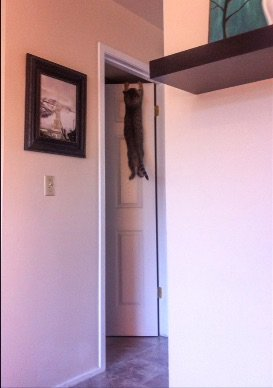

--Alan Watts
"Already your mind’s saying, “Yes, but come on … what about the levels of enlightenment and what about my emotional blocks, and what about my chakras, they’re not all fully open? What about my stillness – I’m not really still yet, and what about my ego? It’s a bit reduced but it’s still there.”
--Tony Parsons
Hopeful client: I am no longer seeking. I see that this is it. I just need your help seeing this from different angles so that my mind doesn't take me away from present reality again and pull me back into thinking.
Most spiritually-inclined folks are pretty certain there’s something to get. and then, once gotten, it has to be held onto.
A person can get there and then, can/should/must stay there.
Of course anyone can be forgiven for thinking any of that, especially since it seems to be the message from so many teachers, memes, and opinionated online posts.
Interestingly though, there’s a common experience many people describe when they have a “holy crap” spiritual-type event.
Quite often they describe a sense of sliding, a feeling of scrambling on vertical glass, of no gripper and also no grip.
For a moment it is clear that there’s nothing to hold onto.
And then almost instantly, all these same folks want to do is hold on to that realization, that understanding.
Permanently. As in, forever.
They want to grip the ungrippable. They want to never let it go.
“Whoo hoo I got it! This is it! Now how do I keep it?”
Oh the pain of contradiction, dissatisfaction, and perpetual seeking inherent in this particular confusion.
Because asking any version of, “How do I stay here?” such as, How do I keep thought from grabbing me again? Or, How do I keep my awareness of awareness? Or, How do I keep this bliss, this “not minding what happens” state?
is a hopeless, failure-guaranteed goal.
First, because here on planet earth, nothing stays.
Weather changes minute by minute, rivers change direction, earth’s axis and magnetic poles shift. Creatures are alive and then dead. Skin cells, hair, athletic ability, ideas, thoughts, moods, feelings- all come and go, all here then gone.
Why would we think some spiritual understanding, or a grasp of awareness, or some clarity of thought, is supposed to be the exception to that very clear Earth-rule?
How is it reasonable to think we’re supposed to grasp something and keep it grasped forever?
Especially when our alive-human biology makes “holding onto” anything, even awareness, flat-out impossible.
Because it’s the brain which enables us to experience anything, including awareness.
Humans can’t do a single thing without the brain. That would be called “vegetative state.”
Without the brain, we can’t think, we can’t feel, we can’t meditate or zone out, we can’t experience bliss or consciousness, and we can’t “attain enlightenment”.
It is not possible to be alive and transcend the brain.
Which means humans are always limited by its capabilities.
Which means the grand spiritual experience so many folks are chasing happens within the limits of the small piece of meat in our heads.
And as it happens, that meat, developed after many millions of years of evolution and species survival, does not do sameness. That meat looks for and requires difference, it requires change, it requires movement. (There’s tons and tons of science on this.)
The brain sees a clear blue sky and instantly turns attention to the one cloud or the one bird or the one plane moving within all that clear empty space.
If nothing happens to be moving or appearing in the clear sky, then its attention simply wanders elsewhere.
The brain can’t stay focused on emptiness for more than a second or two.
It literally cannot.
So good luck to any seeker trying to make nothingness, or sameness, or some dearly-loved experience, stay forever.
Besides, trying to regain or attain or hold onto that sliding nothingness actually makes the sense of self, the one to whom this is happening, more solid, not less. More something, not nothing.
So finally we might get that chance to experience that long-awaited, long-desired moment of nothingness and then boom, the mind promptly obliterates that emptiness by placing the ME squarely in the center of it.
Bye-bye, scrambling moment of not-there.
Of course, none of this is to say that the sense of something bigger, the sense of a consciousness which is always there, comes and goes.
Consciousness may indeed be here always. It may indeed be the one thing that stays.
And we may even sense this, or feel it, or somehow be absolutely convinced we know this.
And it may feel like consciousness is ever-present.
But “feels like” is not “knowing.”
And let’s get honest, we do not know. And never will.
Because true knowing also happens within the limited brain.
What we do know though, is that no one in human history has stayed in that highly-desired awareness of awareness, permanently.
No one. Not even Ramana. Or Krishnamurti, or Nisargadatta.
Seeing this can be a great relief.
Because chasing permanence of any kind is nothing but frustrating.
And wouldn’t it be lovely to grasp or not grasp, get and then lose, hold and then let go,
Without rules or impossible demands for anything else.
Perhaps this is the true This Is It.
Perhaps this is something worth grasping,
and worth holding onto,
Even if only for a moment.
"We don't wake up forever. We wake up only now. People have these wonderful experiences of spiritual opening, and that's not it. As soon as they think, "I want this to last forever," they've moved in to a future and lost the reality. This is it, right now. It's that simple. Only this exists."
--Byron Katie
"Why would you want to keep the heart captive, like an unopened bottle of wine?"
–Hafiz
Want to watch Judy's Buddha At The Gas Pump interview? click here
.
